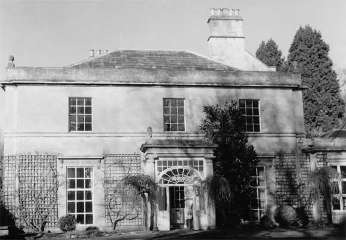

Type of building:
Detached country house
Listing:
Grade ll
Plan and elevation:
Original house single pile on three storeys with a cellar. Now double pile with
substantial two-storey additions and an extended basement area.
Summary of the probable main building
history:
Late 17th Century or early 18th Century east wing with extensions about 1750.
West wing early 19th Century. Further extended later 19th Century and early 20th Century.

South elevation
Exterior:
From the south elevation the house is of two-storeys and of ashlar construction
with a hipped and slated roof behind a parapet surmounted by stone acorns and
with a moulded projecting cornice. There is a date stone of 1750 and the initials
HW. The ground floor windows are two 6-over-9 sashes under cornices on brackets.
The first floor has three 6-over-6 sash windows with a moulded continuous cill
band. A portico is surmounted by two stone statuettes in the form of lions and
supported by Tuscan columns and has a fanlight and glazed doors. A single storey
extension to the right is under a hipped and slated roof. The western elevation
overlooking the main grounds has four 15 pane sashes (6-over-9), the outer two
in slightly advanced wings.
The east wing is of three-storeys over a basement. It is constructed of coursed rubble stone under a pitched slated roof. There is an octagonal stair turret housing later inserted windows with freestone dressings and a parapet. Two-storey extensions to the right are of axe squared and coursed rubble stone with dressed stone bonded joints. All windows are sashes with dressed stone surrounds. Ashlar chimney stacks.
Interior:
The east wing of the house is much altered. The stairs have been removed from
the turret at lower levels leaving residual stairs linking the third floor rooms
with the second floor of the west part of the building. The turret retains its
internal curve where the stairs remain. Ceilings have been heightened with the
first floor fireplaces (sealed) visible from the ground floor rooms. Timber ceiling
beams have been boxed in (information from the owners). The west part of the house
is of the Regency period. On the ground floor this comprises two large formal
rooms with high ceilings, plaster covings with corner rosettes and ceiling centres
and large sash windows with slender glazing bars. The vestibule and hall are spacious
with a stone cantilevered stair (now mainly boxed-in) with scrolled brackets carved
into the stone, square section balusters alternating with shaped wrought iron
balusters, a veneered handrail scrolled at the newel post which supports a finial.
The roof is of king-post construction with carpenters marks. An extensive basement
(partly vaulted) runs under both parts of the house. The basement area under the
east wing contains a stone water tank continuously fed by a east-west flowing
spring and then apparently channelled under the house to reappear in the grounds
to the west of the house, where there are visible remains of a late 19th Century
pump and cascade
Date & development:
These notes have been written with the specialist advice of Mike Chapman.
The following developmental sequence for the house is proposed:
Phase 1. A single pile house built which now constitutes rooms G1 and G2 of the east wing. This building is difficult to date due to the extensive "gentrification" which subsequently took place as it was transformed into the services area and servants accommodation removed from the main (west) polite house built after 1813. However, the single pile layout of the original house, the substantial wall thickness and the former stair turret point to a construction date of the late 17th Century or, possibly, the early 18th Century. Thorpe's map of 1742 shows three separate structures on the site - one of which is probably the east wing of the present house. The other two buildings may be the two existing buildings to the south-east, which appear to be former barton buildings converted into private residences once part of the estate but now under separate ownership.
The early house is located directly over a cellar with a spring in the north-east corner. The 1742 Thorpe map labels the property "Cold Bath" and it is probable that the spring was exploited as a business venture to meet the fashion popularised by Dr. Oliver (c.1704) for taking the cold waters. If so, the venture was short lived (Quinn p.161). It is difficult to explain how the cellar was reached; either some access from the stair turret has been filled in, or there was an entrance down steps from the outside. It is also uncertain where bathing took place. Cold baths were usually outdoors although the former Cold Bath in Claverton Street, Bath, was indoors.
Phase 2. The property was acquired by Henry Walters in or about 1750. From the evidence of the butt joints, a south wing (G4) and a north wing (G3) were added to the house, presumably at about this date.
Phase 2A. A further northern extension was constructed some time before 1813, as shown by an estate plan of that date, and during the Walters’ period of ownership. This extension was subsequently replaced by, or incorporated into, G7.
An estate plan was drawn up in 1813 in anticipation of sale and shows the house now consisting of G1, G2, G3, G4 and, possibly, part of G7. The house appears to have faced onto a parterre or enclosed terrace garden to the west.
Phase 3. The west part of the house constituting G5 and G6, with extended cellarage under, was added and largely filled the area formerly occupied by the terrace garden. The style of this addition to the house and its internal features point to a construction date not long after 1813.
Phase 4. The northern outbuildings constituting G7, G8 and G9 were probably added in the later
19th Century within an enlarged courtyard. G7 was fashioned out of the former 18th Century extension. The north wall of G8 lines up well with the north wall of the old extension as shown on the 1813 plan so G8 may predate G7 and G9. Even so, all these buildings were in place by the time of the 1902 revised edition of the OS 25” map. The large detached functional building to the north-west, presumably stabling and a coach house, shown on the 1813 plan was possibly demolished during this phase.
Phase 5. G10 as the final building phase was constructed post 1902. Apparently originally designed as a billiards room, a fashionable Edwardian pastime, G10 is of early 20th Century date.
Ownership/occupation:
Dobbie believes (p.16) that the site was probably the demesne farm of the medieval
manor of Batheaston and Amorel. Otherwise nothing is known of the documentary
history of the property until its appearance on the 1742 Thorpe map.
The property bears the date stone 1750 and the initials of Henry Walters who acquired the property as a farm on the strength of his wife’s dowry (information from the owners). The property was subsequently leased out as “Cold Bath Farm”. Thomas Walters disposed of the property sometime after 1813. By 1840 the property was owned and occupied by Lydia Bedford who retained 8 acres of land in her occupation. Between 1848 and 1886 the property was owned by C.E. Broome who had some local and national importance as a botanist. On his death, his collection of 2000 plants was presented to the Royal Victoria Park Botanical Gardens by his family.
References:
- An English Rural Community, B.M. Willmot Dobbie, Bath University Press, 1969
- Batheaston Tithe Map & Apportionment Schedule 1840. Somerset Record Office
- Holy Wells of Bath & Bristol Region, Phil Quinn, Logaston Press, 1999
- The Bath & County Graphic, December, 1902, p.93-94
Reference Pictures
| South
door |
West
elevation |
East
elevation, showing the stair turret. |
| East
elevation detail (i) |
Date
stone on south elevation |
East
elevation detail (ii) |
| Gate
& ironwork, north side |
Garden
urn, west side |
Survey drawings
| Ground
Plan |
Cellar
Plan |
Scaled
ground plan of the present house superimposed upon an estate plan
of 1813 |
| Final
developmental plan of the property |